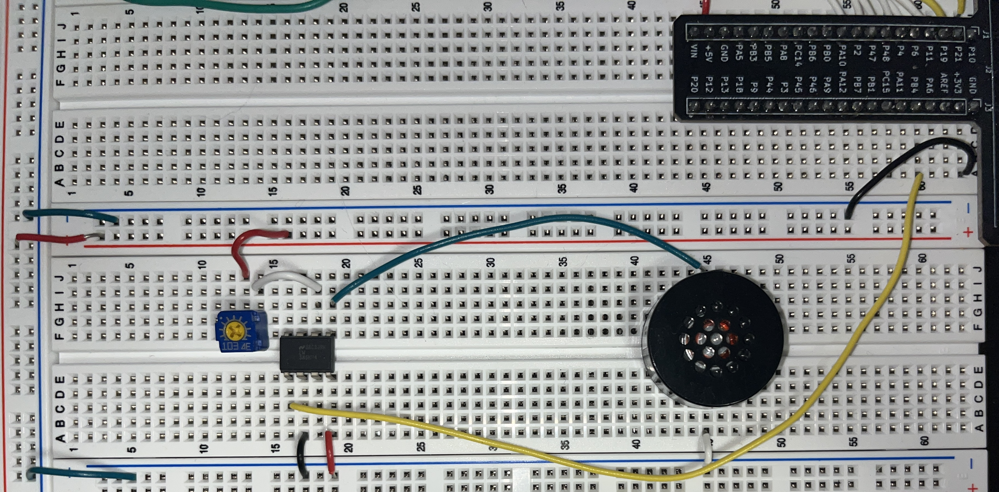
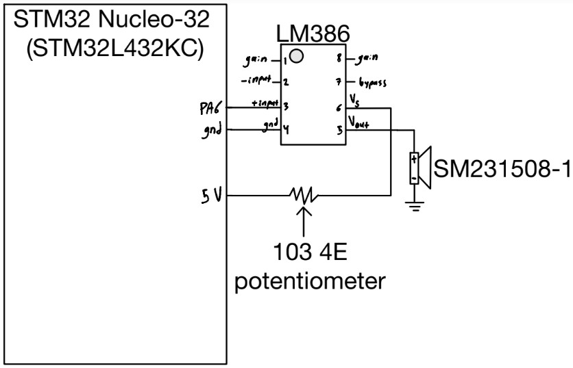
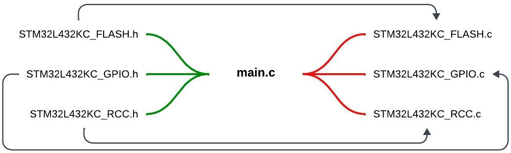
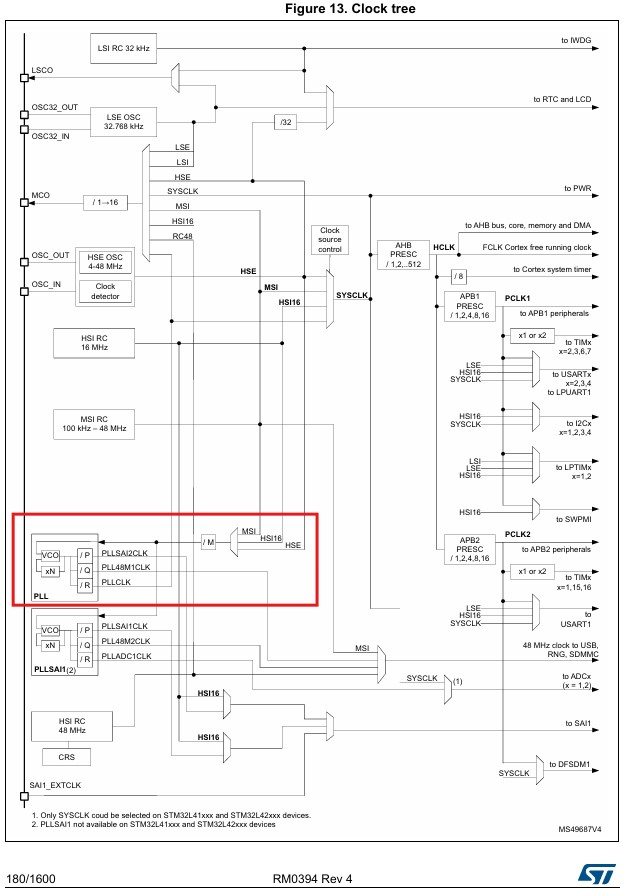
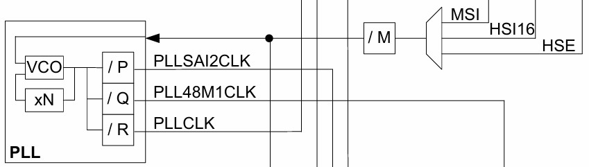
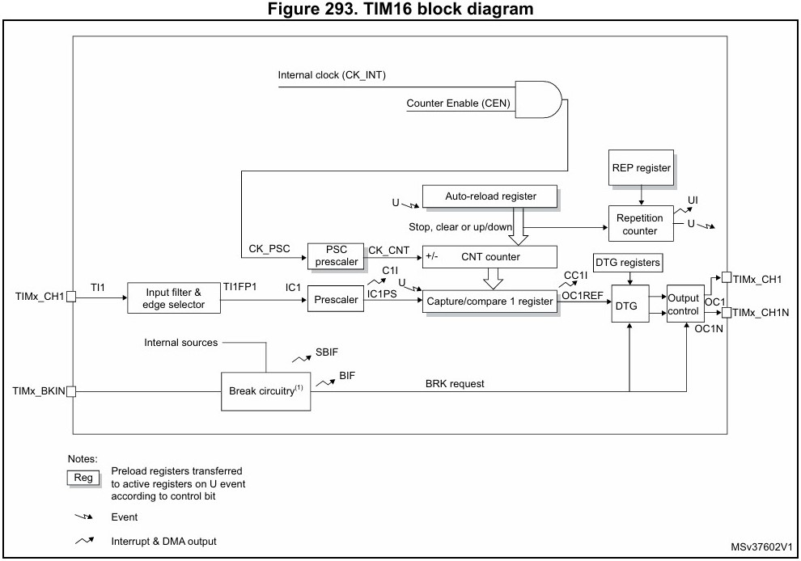

Digital Audio
Intro & Design Approach
This lab utilized an SM231508-1 8ohm speaker, and a STM32 Nucleo-32 board with an on board STM32L432KC MCU in order to play a the song “Für Elise” and “Happy Birthday”. This was done without using CMSIS, instead using memory mapped I/O, and accessing specific memory addresses and peripherals in order to initialize and run the code on the MCU.

Design
This section goes into the hardware and software design specifics
Hardware
A simple audio amplifier (LM386) chip was used to drive an 8-ohm speaker. The amplifier was powered by a 5V supply, and the input signal was a 3.3V PWM signal. A 103 4E potentiometer was also included in the circuit to function as a volume control interface.

File Structure
All files used in the project, including the specifically generated Segger project files, are stored in the same local directory. Within the Segger project, the file structure is organized as shown in Figure 3. Green lines indicate #include directives in the main.c file, while the black arrows show the correlation between header files and their respective .c files.

High Level Software description
The Multi-Speed Internal (MSI) clock, combined with a PLL configuration, was used to achieve the desired system clock (SYSCLK) speed of 4 MHz. The SYSCLK was routed to the GPIOA and TIM16 peripherals. TIM16, a built-in timer, was used for PWM generation to drive the speaker. A simple counter function, implemented in main.c, operated based on the SYSCLK. The key parameters for setting the output frequency and note duration were TIM16’s internal registers: the Auto-Reload Register (ARR) and the prescaler (PSC), which worked together with the counter variable to acheive desired output.
System Clock Configuration
As mentioned, the MSI onboard clock was used as an input to the PLL configuration, which allows for precise SYSCLK speed control. The PLL uses two divisors (M and R) and one multiplier (N), as shown in Figure 4, to achieve this function. With the MSI frequency at the default frequency of 4 MHz and setting M=1, N=8, and R=4, we can achieve the desired SYSCLK speed of 8 MHz.


TIM16 & Frequency Generation
TIM16 is the peripheral used to produce the desired PWM signal frequency. First, the prescaler (PSC), as shown in Figure 4, was set to 255 to bring the TIM16 counter frequency closer to the desired range. To output a specific frequency, we can refer to Equation [1].

\[ Freq=\frac{SYSCLK}{PSC+1} * \frac{1}{ARR+1} \tag{1}\]
As shown in Equation 1 Equation [1], Freq represents the desired PWM frequency, and ARR is the 16-bit register used to control this frequency. Therefore, Equation [1] can be simplified into the form of Equation [2], and further reduced to Equation [3]. Equation [3] was implemented in main.c to control the output frequency.
[2] \(ARR=\frac{SYSCLK}{Freq*(PSC+1)}-1\)
[3] \(ARR=\frac{31250}{Freq}-1\)
Frequency & Duration Analysis
This section discusses the frequency accuracies, minimum and maximum frequencies, and their corresponding durations.
Frequency Accuracy
To demonstrate the accuracy of the PWM output frequencies, Equation [4] calculates the ARR value for a 659 Hz frequency, which corresponds to a note from Für Elise.
[4] \(ARR = \frac{31250}{659}-1 = 46.42\)
The new value of ARR is internally rounded to the nearest integer, resulting in ARR = 46. By rearranging Equation [3] to solve for Freq, as shown in Equation [5], we can substitute the new ARR value to calculate the output frequency.
[5] \(Freq = 31250*\frac{1}{ARR+1} = 31250*\frac{1}{46+1} = 664.89\)
The percent error, as calculated in Equation [6], is significantly less than 1%, which is more than sufficient for the accuracy required in this application.
[6] \(\%_\text{error} = \frac{664.89 - 659}{664.89} = 0.0089\)
Frequency min/max
The minimum frequency corresponds to the maximum value of the 16-bit ARR register (\(ARR_{\text{max}} = 2^{16} - 1\)). This can be calculated using Equation [7] below.
[7] \(Freq_{\text{min}} = 31250*\frac{1}{ARR_{\text{max}}+1} = 31250*\frac{1}{65535+1} = 0.48Hz\)
The maximum frequency corresponds to the smallest value of the 16-bit ARR register (\(ARR_{\text{min}} = 1\)). This can be calculated using Equation [8] below.
[8] \(Freq_{\text{max}} = 31250*\frac{1}{ARR_{\text{min}}+1} = 31250*\frac{1}{1+1} = 15.625kHz\)
Duration Accuracy
The only thing that affects the accuracy of the duration is the value ‘x=887’ declared in the software in the delay block, which has already been determined to be accurate.
Duration min/max
For the following calculations, please consider the relationship given in equation [9].
[9] \({ms_{\text{desired}}} = \frac{ARR}{100}\)
The maximum duration corresponds to the maximum value of the 16-bit ARR register (\(ARR_{\text{max}} = 2^{16} - 1\)). This can be calculated using Equation [10] below.
[10] \({ms_{\text{desired}}} = \frac{65535}{100}\) = 655.35ms
The minimum duration corresponds to the smallest value of the 16-bit ARR register (\(ARR_{\text{min}} = 1\)). This can be calculated using Equation [11] below.
[11] \({ms_{\text{desired}}} = \frac{1}{100}\) = 0.01ms
Debugging
The built-in debugger in Segger was used to directly inspect register values to validate the design. By stepping through the execution one step at a time, the register values of interest could be monitored to ensure they were functioning as expected.
Video of Both Songs
Results
This lab resulted in a working audio system, including the ability to play “Für Elise” and “Happy Birthday.” It effectively utilized the TIM16 and GPIO peripherals in the MCU, accurately playing the notes for each song with correct timing. This lab took me about 15 hours to complete.
Reflection
This lab was the first time I had to delve into such extensive documentation—the reference manual for the STM32L432KC MCU chip. Through this experience, I began to gain confidence in my ability to decipher datasheets and reference manuals in a useful way. I started to understand the format and the reasoning behind why developers created these manuals the way they did. I had fun during this lab and found it very interesting that when working at such a low level in the MCU, you can see the true speed at which these components operate. This sparked new ideas for future projects in my mind, and I am glad to have this skill set in my toolbox for both academic and personal project reasons.